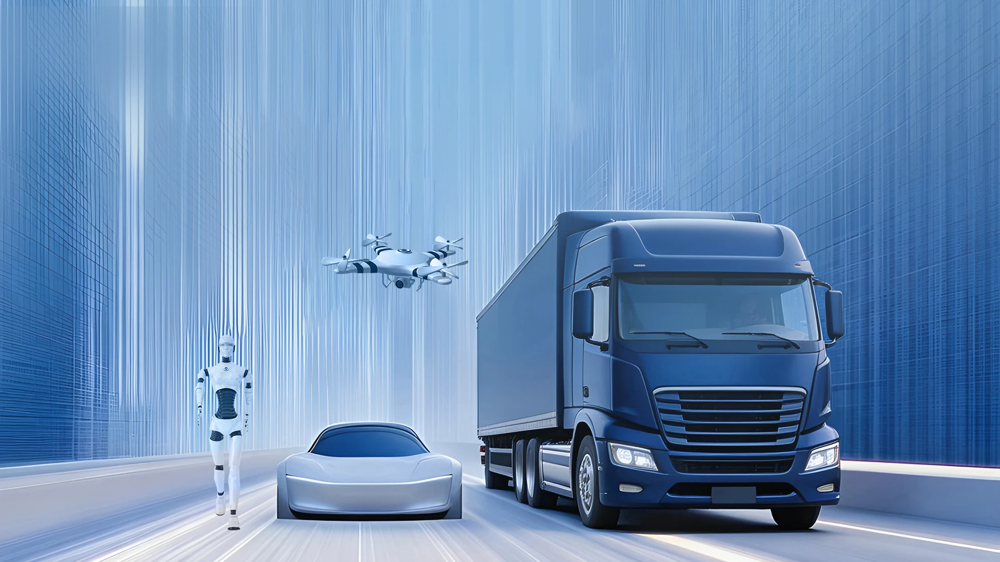
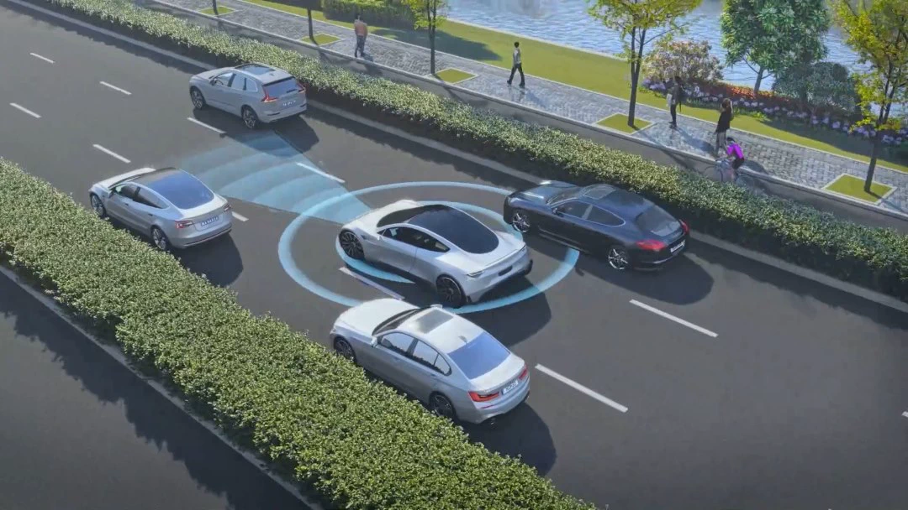
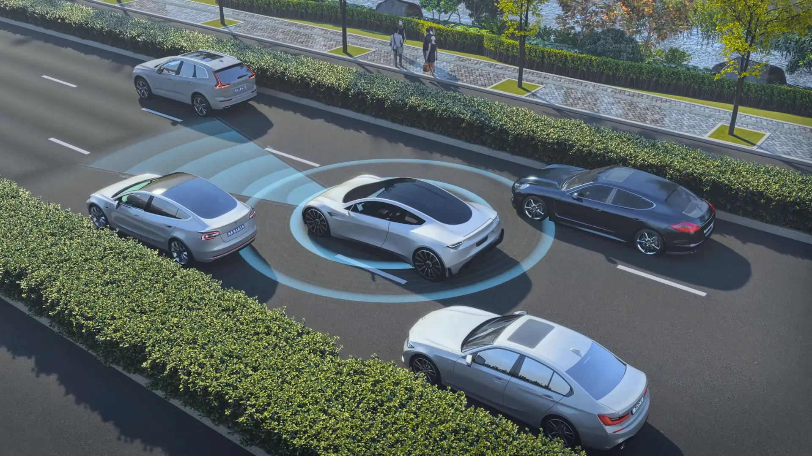
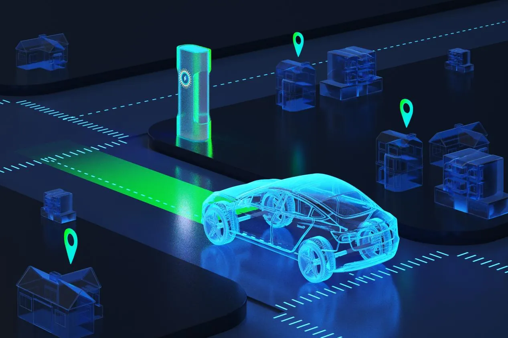
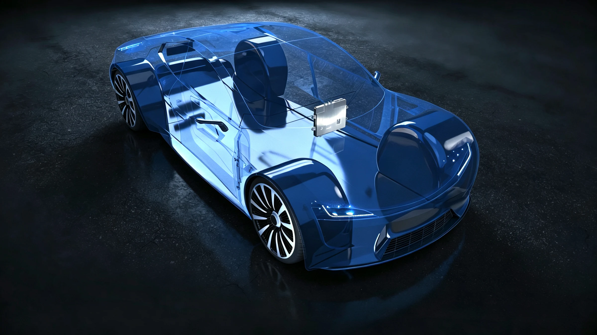

More than 120 cumulative design wins

>Boldly Exploring the Future of Smart Mobility
We are an intelligent solutions provider focused on the R&D and sales of solutions and products for intelligent driving assistance, intelligent cockpits and general-purpose robotics. Leveraging our system integration capabilities and cross-domain expertise in visual perception, multi-sensor fusion positioning and navigation, and planning and control, we continue to develop intelligent products for diverse scenarios.
Founded in 2013, VOYISL builds on full-stack, self-developed core technologies to scale intelligent perception, decision and control across general intelligent agents in multiple domains. With over a decade in the automotive industry and proven commercialization experience, the company continues to invest in AI R&D, extending its ground-mobility intelligence system into emerging fields such as the low-altitude economy and embodied robotics.
As a long-term contributor to China's smart mobility sector, VOYISL is expanding into global markets, serving smart industries worldwide with innovation from China. The Company holds 200+ patents, with R&D staff accounting for nearly one-third of its workforce, and has been successively recognized as a High-Tech Enterprise, a Specialized & Innovative enterprise, and a Shanghai Science & Technology Little Giant enterprise.

More than 120 cumulative design wins

Technology is a core pillar of our business. Since our establishment, we have remained focused on technology innovation, development and iteration, with capabilities spanning the full chain of visual perception, positioning and navigation, planning and control.
We adopt an integrated hardware and software development model, providing customizable solutions and products for different vehicle models while balancing functional requirements, computing resources, system reliability and cost control. We have built VT-Navigara, an integrated hardware and software technology platform built on an algorithmic foundation. With a reusable, iterable and scalable architecture, the platform efficiently turns underlying technologies into production-ready solutions and products, while extending proven capabilities to a broader range of applications at low incremental development cost.

Multi-camera perception with deep learning delivers object detection, lane marking, blind-spot monitoring and surround view — so the vehicle sees clearly, far and wide.

Fusing vision, inertial and wheel-speed data builds high-accuracy localization and mapping, providing a reliable spatiotemporal reference for automated parking and urban pilot.

Built on domain controller platforms with an automotive-grade safety architecture, VT-Vulcan orchestrates planning, decision and execution for smooth control and functional safety.
A technology foundation validated through automotive mass production, reused across four major domains and multiple scenarios.
Solutions for passenger and commercial vehicles including DMS, CMS, AVM, etc.
Farming operations, orchard plant protection, farm inspection, etc.
Drone inspection, low-altitude logistics, park security, etc.
Service and industrial robots for industrial parks such as warehousing and smart manufacturing

On October 27, the 8th Intelligent Driving Conference & 2026 Huanxiu Lake Physical AI Industry Development Promotion Conference themed “Intelligent-Connected World, Steer…

On September 17, the 2026 KPMG China Automotive Industry Summit and the 9th AutoTech 50 Ranking Release Ceremony was held in Shanghai. Drawing on more than a decade-long…

On September 17, at the TOP50+ Agricultural Machinery of the Year Awards Night of the 14th 2026 Agricultural Machinery Industry Conference, Voyager Intelligent Systems Li…

From September 7 to 9, the 2026 International Conference of Intelligent Cockpit (ICIC 2026), hosted by the China Society of Automotive Engineers (China SAE), was grandly…

Compared with passenger vehicles, commercial vehicles feature larger body dimensions, more extensive blind zones and more complex operating conditions, imposing higher re…

Joining hands with local strategic partners MEKRA Lang do Brasiland Metagal Industria e Comércio, Voyager Intelligent Systems Limited made a remarkable appearance at the…
Whether it is product inquiry, business cooperation or technical exchange, we look forward to hearing from you.